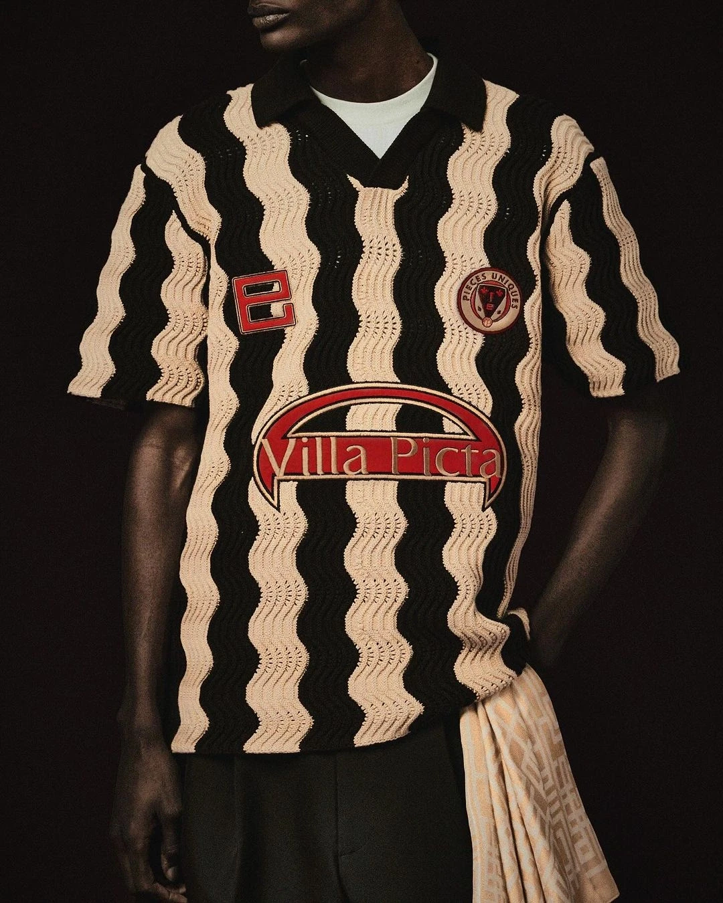
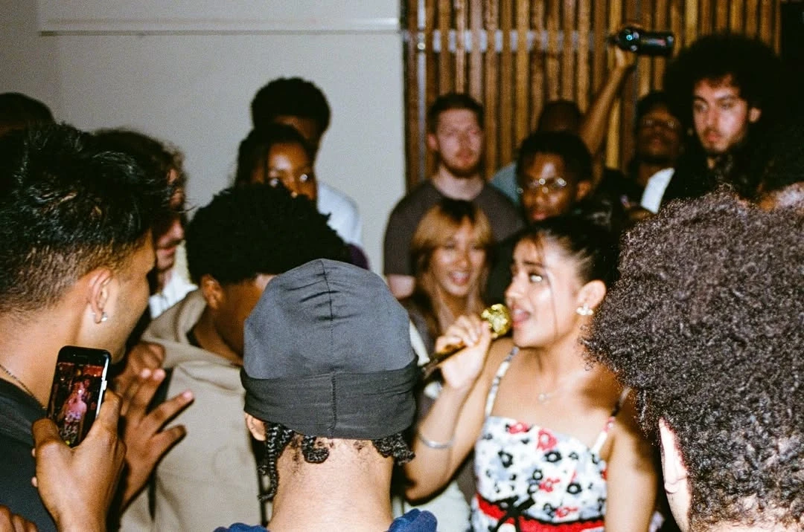
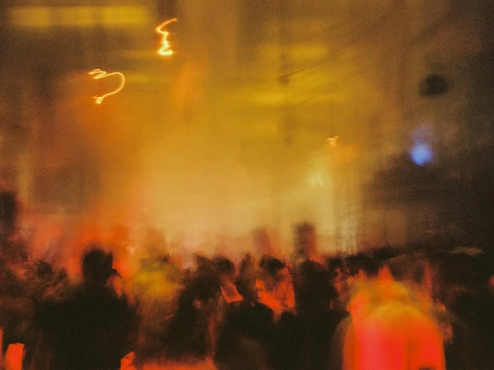
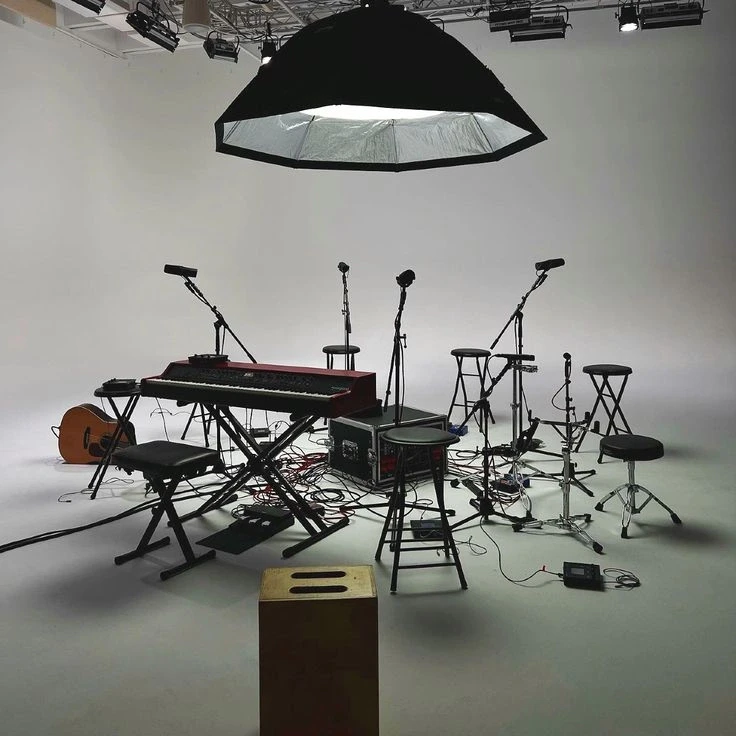
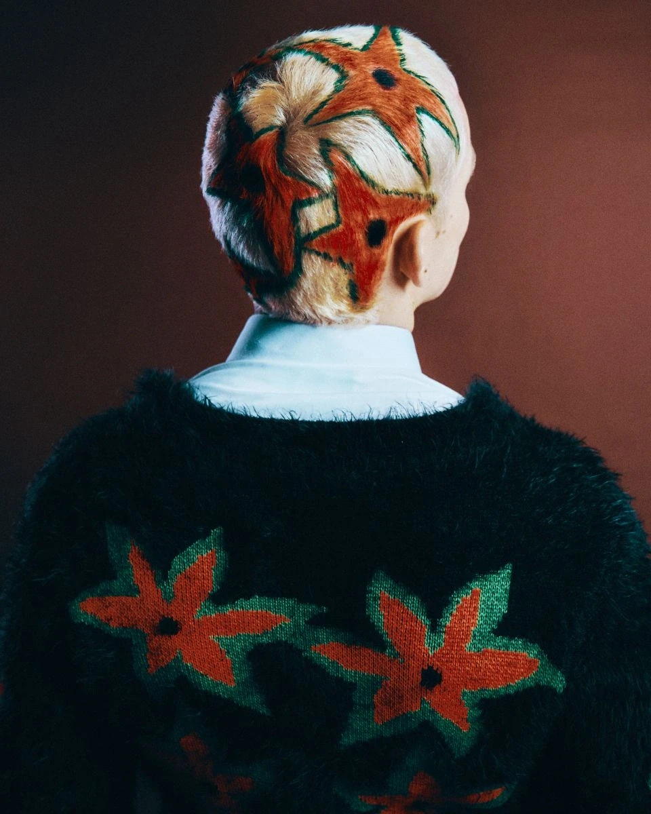

Our work is the set of rules underneath how a brand behaves.
Our identities and systems have to hold up across brand, product, marketing and events, so we build them that way from the start. Teams in different departments get one shared idea of how the brand works.
None of that holds unless someone decides what the brand is for. We start there, with the vocabulary a company's own culture already suggests, because that is the part a folder of files cannot supply.
The groundwork, and the big set pieces built on top of it.
More on how we work
A system is only as good as the working relationship behind it, which is why we never grew. You deal with the people doing the work, so nothing gets handed down a chain and quietly loses half of what it meant on the way.
After a few months most clients stop treating us as a supplier and put us on the internal calendar.
